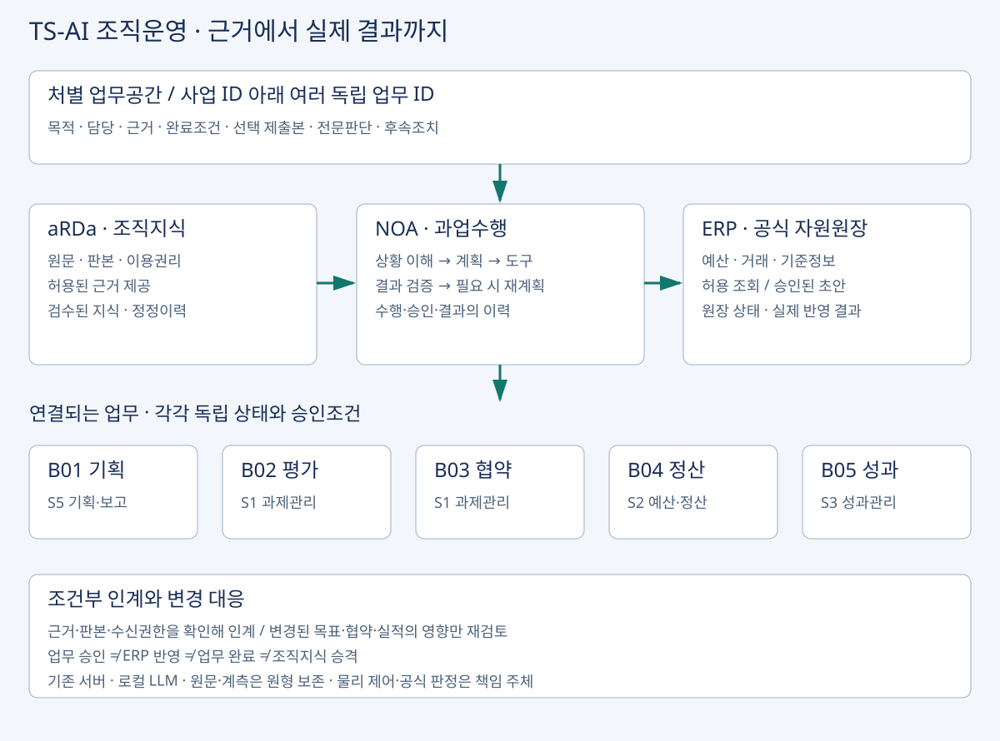

조직운영 플랫폼 · 요구·데이터·실행 연결
NOA가 업무를 계획·수행·검증하고, aRDa가 허용된 조직지식 근거를 제공하며, ERP가 공식 자원·거래 상태를 유지함. TS-AI는 이 운영모델의 이름이며 NOA 위에 동일 기능의 별도 플랫폼을 다시 구축한다는 의미가 아님.

사업과 독립 업무의 관계
project_id → 여러 work_id → 각 업무의 근거·담당·승인·상태·공식 결과
| 업무 | 원 대화 서비스 ID | 조직이 확보할 결과 |
|---|---|---|
| B01 기획 | S5 기획·보고 | 유효 목표·필요성·예산 근거·성과 정의 |
| B02 평가 | S1 과제관리 | 기준·증거·미확인 사항·권한자의 판단 |
| B03 협약 | S1 과제관리 | 확정 조건·변경 효력·반영과 미반영 |
| B04 정산 | S2 예산·정산 | 증빙·규칙 검산·승인·ERP 결과 대사 |
| B05 성과 | S3 성과관리 | 목표 대비 검증된 실적과 다음 기획 근거 |
- 5개 업무가 4개 서비스를 사용함.
- 원 대화의 S1·S2·S3·S5 번호를 그대로 보존했으며 S4를 임의로 추가하지 않았음. B01부터 B05까지 항상 한 방향으로 통과하는 결재선이 아니라 인계조건을 가진 독립 업무임. B04 정산은 첫 실증 후보일 뿐 확정 수요가 아님.
서비스·데이터 흐름
근거 요청 → aRDa 권한·판본 확인 → NOA 사건·계획 → ERP 또는 원천의 허용된 조회 → 근거·계산 대조 → 공식 승인 → 허용된 초안 등록 → 실제 원장 조회·대사 → 업무 결과·검수된 지식 인계.
- 기획·평가 업무가 ERP에 쓰지 않아도 이 모델을 사용할 수 있음.
- 지급·마감·취소를 기본 허용하지 않으며 기관이 정한 공식 승인체계를 대체하지 않음.
- 개인 작업공간의 자료는 사용자가 지정한 제출본·근거만 조직업무에 연결함.
F01~F16과 기존 설계 대응
| 원 ID·기능 | 기존/추가 요구 | 추가 확인 | 기존 WBS 참조 |
|---|---|---|---|
| F01 원문·판본 관리 | CORE-SFR-002 | 문서별 식별·판본·원문 권리의 실제 지원 확인 | CORE-W03 |
| F02 문서 구조복원 | CORE-SFR-002 + ORG-DAR-001 | 표·쪽·위치 보존 및 변환 품질 요구 보강 | CORE-W03 |
| F03 문서–ERP 관계 매핑 | ORG-SFR-001 | 문서–사업–ERP 연도·코드·단위 매핑 추가 검토 | 미산정 |
| F04 적용근거 검증 | CORE-SFR-002 | 업무시점·예외·유효기준 적용조건 상세화 | CORE-W03 |
| F05 조직업무 생성 | CORE-SFR-001 + ORG-SFR-001 | 사업 ID 아래 독립 업무 ID·완료조건 관계 보강 | CORE-W04 |
| F06 스킬 조합·실행계획 | CORE-SFR-003 | 스킬 입출력·선행·실행·재계획 계약 검증 | CORE-W04 |
| F07 Agent 교차검증 | CORE-QUR-001 + ORG-SFR-004 | 운영 중 교차검증과 독립평가를 구분하여 추가 요구 | 미산정 |
| F08 검토·수정·승인 | CORE-SFR-004 + CORE-SER-002 | 선택 제출본·중요 변경·공식 승인 연계 대조 | CORE-W05 |
| F09 ERP 조회 | CORE-SIR-001 + ERP-SFR-001 | ERP 조회 시점·상태·누락 별도 명세 | ERP-W01 |
| F10 승인 기반 ERP 실행 | CORE-SFR-004 + ERP-SFR-001 | 초안 등록의 허용행위·값·권한 대조 | ERP-W01 |
| F11 처리결과 대조 | CORE-SFR-005 + ERP-SFR-001 | 접수/등록/확정/미확인과 실제 원장 대사 | ERP-W01 |
| F12 변경·재시도·복구 | CORE-SFR-005 + CORE-SFR-006 + ORG-SFR-002 | 사건 내 복구와 업무 간 영향·재인계 분리 | CORE-W06 |
| F13 권한·AI 보안 | CORE-SER-001 + CORE-SER-002 | 원문·파생물·도구 권한, 수신 부서 재검증 | CORE-W05 |
| F14 근거·실행이력 보존 | CORE-DAR-001 + ORG-SFR-002 | 확정지식과 사업·업무 간 정정계보 보강 | CORE-W03 |
| F15 기관별 설정·이전 | ORG-POR-001 | 기관 설정·어댑터·권리·이전 인수 범위 추가 검토 | 미산정 |
| F16 모델·서비스 운영 | CORE-PER-001 + CORE-QUR-001 + ORG-OPR-001 | 모델·부하 측정과 정기 변경·운영비 책임 연결 | CORE-W07 |
- 기존 WBS 참조는 관련 위치이며 해당 상세기능의 구현·계약 포함·공수 충분성을 확인했다는 뜻이 아님.
- 실제 재사용 증거가 없으므로 추가 공수의 자동 감액도 하지 않음.
IF-01~06 연계 계약 후보
| ID | 방향 | 교환 데이터 | 검증 |
|---|---|---|---|
| IF-01 | aRDa ↔ NOA | 문서·근거 요청, 원문 참조, 판본, 권한, 자료 부족·충돌 | 허용된 근거만 반환하고 사용한 판본·원문 위치 확인 |
| IF-02 | ERP → NOA | 기준정보, 사업·예산·거래 조회결과, 조회조건·시점·오류 | 값뿐 아니라 기준시점·상태·누락 여부 전달 |
| IF-03 | NOA ↔ 공식 승인체계 | 검토본, 반영 예정내용, 승인ID·대상·결과 | 승인한 내용과 실행할 내용의 대응 확인, 중요 변경 시 재검토 |
| IF-04 | NOA → ERP | 승인된 실행요청, 권한·대상·값·중복식별자 | 허용행위만 수행하고 같은 행위의 중복 반영 방지 |
| IF-05 | ERP → NOA | 접수·등록·확정·실패 상태와 거래 식별자 | 응답뿐 아니라 실제 기록과의 대조 경로 확보 |
| IF-06 | NOA → aRDa | 검토·승인된 산출물, 근거 연결, ERP 결과 참조, 정정이력 | 개인 초안·미검증 AI 결과와 확정 조직지식의 구분 |
- API 주소·오류코드·필드·계정은 미확인임.
- 식별자·시점·권한·판본·결과상태를 먼저 확정하고 실제 API 또는 승인된 파일 경로로 대체함.
- 등록 성공 응답만으로 업무 완료를 확정하지 않음.
새로 명시한 요구 8개
| ID | 요구명 | 내용 | 수용기준 |
|---|---|---|---|
| ORG-DAR-001 | 변환품질·자료계보 | 본문·표·쪽·위치를 보존하고 변환 실패·원문 결손·수동 정정을 구분 | 다른 문서·빈값·판독불가·단위오류 반례에서 원문 추적·실패표시 확인 |
| ORG-SFR-001 | 사업–독립업무–ERP 관계 | project_id와 work_id를 분리하고 기간·코드·단위의 대응을 확인 | 같은 사업의 기획·평가·협약·정산·성과를 독립 상태로 유지; 잘못된 연도 연결 차단 |
| ORG-SFR-002 | 조건부 인계·변경영향 | 수신 조건·권한·원판본을 확인하고 변경 영향이 있는 업무만 재검토 | 협약 변경 후 미반영 ERP를 완료로 전달하지 않으며 무관 업무·원기록 보존 |
| ORG-SFR-003 | 목표·집행·성과 대조 | 성과목표 판본·분모·증거와 집행정보를 구분해 계획·성과에 연결 | 예산 집행·문서 생성·업무 수행 완료를 효과달성으로 자동 계산하지 않음 |
| ORG-SFR-004 | 수행 중 교차검증 | 규정·증빙·계산·산출물의 근거를 서로 대조하고 이견을 보존 | 여러 Agent가 같은 오답에 동의해도 실제 근거·검산 불일치를 검토 대상으로 표시 |
| ORG-SIR-001 | aRDa 입출력·지식 승격 | 원문 권한·판본·원문 위치 반환과 검수된 산출물 승격 계약 정의 | 개인 초안/미검증 결과 자동 공유·학습·공식지식 승격 없음 |
| ORG-POR-001 | 기관별 설정·이전 | 조직·용어·규정·권한·ERP 어댑터와 공통코드를 구분 | 기관 변경 시 설정·개조·재검증·권리 인수의 실제 범위를 기록 |
| ORG-OPR-001 | 변경·운영·총비용 | 정기 지식·모델·연계 변경의 책임·시험·복구·비용 정의 | 버전 교체 후 영향 기능 회귀시험·복구·사건대사 및 연간 운영량 기록 |
시험과 운영
정상·증빙 부족·시점 충돌·승인 후 변경·실행 전 원장 변경·권한 회수·응답 유실·실제 값 불일치·문서 악성지시·완료 후 정정을 검증함.
업무 간에는 목표 변경, 협약 승인 후 ERP 반영 실패, 성과 정정의 기획 영향, 수신 권한 변경을 추가함.
모두 시험 설계이며 이번에는 제품 시험을 실행하지 않았음.
17개 연구 KPI는 원 RFP 문맥의 목표다. TS 검수 목표값으로 자동 전용하지 않음.
현행·비AI 통합·AI 보조·업무 수행형 AX를 같은 사례·조건에서 비교하여 추가 기여와 총부담을 확인함.
R&D·제품·TS 적용 경계
- 원 대화의 28개월 R&D 일정·지역 실증·연구기여는 별도 근거로 남김.
- 이 기획은 기존 연구·제품 성과를 활용한 TS AX+SI 적용·검증으로 정리함.
- 제품 공통확장, TS별 연계·권한·지식, 전문 공학시험의 책임과 비용을 구분함.
- 기존 ERP 8 MM 선택 시나리오가 B01~B05 전체 확장 견적이라는 해석은 하지 않음.
승인·완료 상태의 해석
- 근거가 바뀌었을 때 차단하는 것은 영향받는 후속 실행에서 기존 승인 토큰을 재사용하는 행위다.
- 공식 협약·검사판정·종결의 원기록을 AI가 취소하거나 효력을 변경하지 않음.
- 공식 효력·정정은 권한자가 판단함.
- 여러 부서가 같은 사건의 해결에 기여해도 해당 국민 편익·재방문 감소를 각각 중복 합산하지 않음.
IF 번호의 출처와 기존 계약 대응
- 위 IF-01~06은 조직운영 대화의 번호임.
- 통합 원장에서는
ORG-IF-01~06으로 구별하며 기존CORE-IF-01~04와 번호대로 대응하지 않음.
| 조직운영 원 ID / 통합 ID | 기존 대응 | 차이 |
|---|---|---|
| IF-01 / ORG-IF-01 | CORE-IF-03 | aRDa 자료조회는 겹침. 원문 위치·권리·부족·충돌 반환을 보완 |
| IF-02 / ORG-IF-02 | ERP-SFR-001 / ERP-W01 | ERP 조회 계약. 기존 CORE-IF-02 권한조회와 구분 |
| IF-03 / ORG-IF-03 | CORE-SFR-004 / CORE-IF-01 | 공식 승인 연결의 별도 계약. 기존 CORE-IF-03은 aRDa 조회 |
| IF-04 / ORG-IF-04 | ERP-SFR-001 / ERP-W01 | 승인된 전표 초안 쓰기. 기존 CORE-IF-04는 정형 계산도구 |
| IF-05 / ORG-IF-05 | CORE-SFR-005 / ERP-SFR-001 | 실제 거래상태 조회·대사 추가 명세 |
| IF-06 / ORG-IF-06 | CORE-DAR-001 / ORG-SIR-001 | 검수된 조직지식 인계. aRDa 조회계약과 분리 |
F02 문서 구조화는 기존 텍스트·표 추출 결과와 품질 검토를 기본으로 함.
신규 OCR·비전 모델 개발은 자동 포함하지 않으며 이미지 원문만 있는 경우 기존 허용 수단·수동확인·자료 제공방식을 협의함.
F07·F15·F16의 교차검증·기관 이전·운영 조건은 기존 포괄 문구와 부분 대응하므로 추가 요구 및 비용을 검토함.
모든 F 기능에 대해 납품·실행 검증은 미확인임.